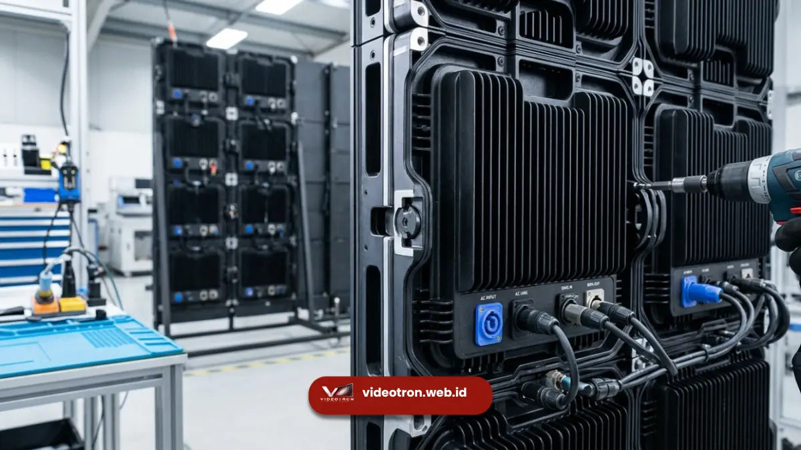

Videotron adalah sebutan populer di Indonesia untuk LED display berukuran besar, sehingga secara teknis keduanya merujuk pada teknologi yang sama namun berbeda dalam konteks penggunaan istilah.
Poin Penting Perbedaan Istilah:
- LED display adalah istilah teknis umum untuk semua layar berbasis modul LED.
- Videotron adalah istilah populer di Indonesia untuk LED display berskala besar.
- Perbedaan penggunaan istilah dipengaruhi oleh konteks acara, ukuran layar, dan kebiasaan pasar.
- Memahami istilah yang tepat membantu komunikasi lebih jelas dengan vendor layar LED.
- 1. Apa Itu LED Display?
- 2. Apa Itu Videotron dan Mengapa Istilah Ini Populer di Indonesia?
- 3. Apa Perbedaan Utama Videotron dan LED Display?
- 4. Kapan Sebaiknya Menggunakan Istilah Videotron dan Kapan Menggunakan LED Display?
- 5. Apa Saja Jenis LED Display Berdasarkan Penggunaannya?
- 6. Kesimpulan & Rekomendasi
Apa Itu LED Display?
LED display adalah istilah teknis yang merujuk pada semua jenis layar yang menggunakan modul LED sebagai sumber cahaya, mulai dari ukuran kecil seperti papan nama toko hingga layar raksasa di panggung konser.
Istilah ini bersifat umum dan mencakup berbagai kategori produk, termasuk digital signage indoor, videowall, dan videotron itu sendiri.
Dalam dunia industri, LED display biasa dikelompokkan berdasarkan fungsinya, misalnya LED display untuk iklan luar ruang, LED display untuk panggung, atau LED display untuk ruang rapat. Karena cakupannya luas, istilah LED display lebih sering digunakan dalam konteks teknis, spesifikasi produk, atau dokumen resmi vendor.
Apa Itu Videotron dan Mengapa Istilah Ini Populer di Indonesia?
Videotron adalah sebutan yang berkembang di masyarakat Indonesia untuk menyebut LED display berukuran besar yang biasanya dipasang di ruang terbuka, seperti di pinggir jalan, panggung acara, atau fasad gedung.
Istilah videotron mulai populer sejak layar LED besar banyak digunakan untuk papan reklame luar ruang di kota-kota besar.
Karena penggunaannya yang identik dengan layar besar dan mencolok, masyarakat kemudian menyamakan videotron dengan segala jenis LED display berskala besar, meskipun secara teknis videotron sebenarnya adalah salah satu kategori dari LED display secara keseluruhan.
Apa Perbedaan Utama Videotron dan LED Display?
Perbedaan utama videotron dan LED display terletak pada cakupan istilah, di mana LED display adalah kategori teknis yang luas sedangkan videotron adalah sebutan pasar untuk LED display berskala besar dengan kecerahan tinggi.
Dari sisi teknis, tidak ada perbedaan mendasar pada cara kerja keduanya karena sama-sama menggunakan modul LED, driver IC, dan sistem kontrol video.
Perbedaan lebih terlihat pada konteks penggunaan kata di lapangan. Vendor atau teknisi cenderung menggunakan istilah LED display saat membahas spesifikasi produk secara detail.
Sementara masyarakat umum dan penyelenggara acara lebih sering menggunakan kata videotron saat memesan layar untuk kebutuhan acara mereka.
Perbedaan lain yang kadang muncul adalah asosiasi ukuran. Videotron identik dengan layar berukuran besar untuk kebutuhan luar ruang. Sedangkan LED display bisa mencakup ukuran kecil untuk kebutuhan indoor seperti ruang meeting atau lobi kantor.
Kapan Sebaiknya Menggunakan Istilah Videotron dan Kapan Menggunakan LED Display?
Gunakan istilah videotron saat berbicara dengan masyarakat umum atau saat merujuk pada layar besar untuk acara outdoor, dan gunakan istilah LED display saat berdiskusi teknis mengenai spesifikasi produk dengan vendor.
Jika Anda sedang mencari layar untuk backdrop panggung konser, pameran, atau acara korporat berskala besar di ruang terbuka, istilah videotron akan lebih mudah dipahami oleh vendor lokal di Indonesia.
Namun, saat Anda perlu membandingkan spesifikasi teknis seperti pixel pitch, refresh rate, atau tingkat kecerahan, istilah LED display akan lebih relevan digunakan karena bersifat lebih presisi dan sering dipakai dalam dokumen teknis internasional.
Memahami cara kerja di balik kedua istilah ini juga membantu Anda menilai kualitas layar secara lebih objektif. Penjelasan lengkap mengenai proses pembentukan gambar pada layar LED dapat dibaca pada artikel cara kerja videotron.
Apa Saja Jenis LED Display Berdasarkan Penggunaannya?
LED display dapat dibedakan berdasarkan lokasi pemasangan, yaitu LED display indoor untuk ruangan, LED display outdoor untuk area terbuka, dan LED display semi outdoor untuk area dengan atap namun tetap terpapar cuaca.
LED display indoor umumnya memiliki pixel pitch lebih kecil karena jarak pandang penonton yang dekat, sedangkan LED display outdoor dirancang dengan kecerahan lebih tinggi dan pixel pitch yang disesuaikan dengan jarak pandang dari kejauhan.
Ukuran pixel pitch inilah yang nantinya menentukan ketajaman gambar videotron, sebagaimana dibahas lebih rinci pada artikel apa itu pixel pitch.

Unit modul LED display outdoor yang dibekali sasis pelindung tahan air dan debu.Kesimpulan & Rekomendasi
Secara teknis, videotron dan LED display merujuk pada teknologi yang sama, namun berbeda dalam konteks penggunaan istilah di masyarakat.
LED display adalah istilah teknis yang mencakup semua jenis layar berbasis LED, sedangkan videotron adalah sebutan populer untuk LED display berskala besar yang umum digunakan di Indonesia.
Memahami perbedaan ini membantu Anda berkomunikasi lebih tepat saat berdiskusi dengan vendor, baik untuk kebutuhan acara maupun instalasi permanen.
Jika Anda masih ragu memilih jenis LED display yang tepat untuk kebutuhan acara Anda, tim videotron.web.id siap membantu memberikan rekomendasi spesifikasi sesuai lokasi, ukuran, dan anggaran acara Anda.

Hawa Nadira
LED Technology Consultant & Visual Educator
Konsultan dan spesialis solusi display digital berdedikasi tinggi yang fokus membagikan panduan edukatif mengenai penerapan teknologi layar LED videotron untuk kebutuhan interior modern di Indonesia.